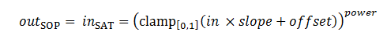
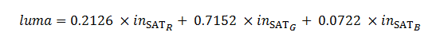
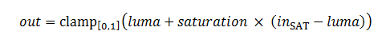
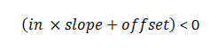

ASC_CDL 运算符表示美国电影摄影师协会的颜色确定表格式（*.ccc 或 *.cdl）的颜色变换。
ASC CDL 变换由分别应用于每个 RGB 通道的 slope-offset-power (SOP) 函数组成，后跟同等应用于所有通道的饱和度函数。
它是 Academy/ASC XML 颜色变换格式的 Autodesk 扩展。
版本 1.3。
| 值 | 含义 |
|---|---|
| "v1.2_Fwd" |
   |
| "v1.2_Rev" | "v1.2_Fwd" 的反向值。 |
| "noClampFwd" | 与 "v1.2_Fwd" 相同，但没有两个钳制函数。如果
 则不应用强度函数。 |
| "noClampRev" | "noClampFwd" 的反向值。 |
<ProcessList version="1.3" id="7b42c76a-8c7a-4142-8b6e-1c467084075a">
<ASC_CDL id="cc01234" inBitDepth="16f" outBitDepth="16f" style="v1.2_Fwd">
<Description>scene 1 exterior look</Description>
<SOPNode>
<Slope>1.000000 1.000000 0.900000</Slope>
<Offset>-0.030000 -0.020000 0.000000</Offset>
<Power>1.2500000 1.000000 1.000000</Power>
</SOPNode>
<SatNode>
<Saturation>1.700000</Saturation>
</SatNode>
</ASC_CDL>
</ProcessList>